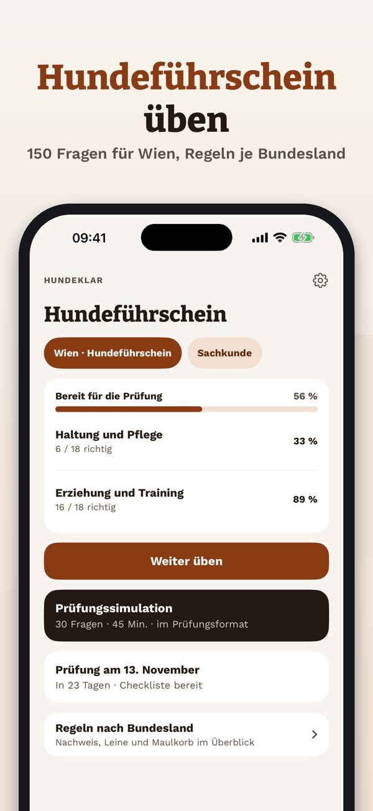
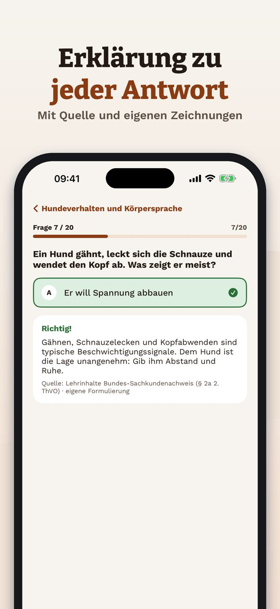
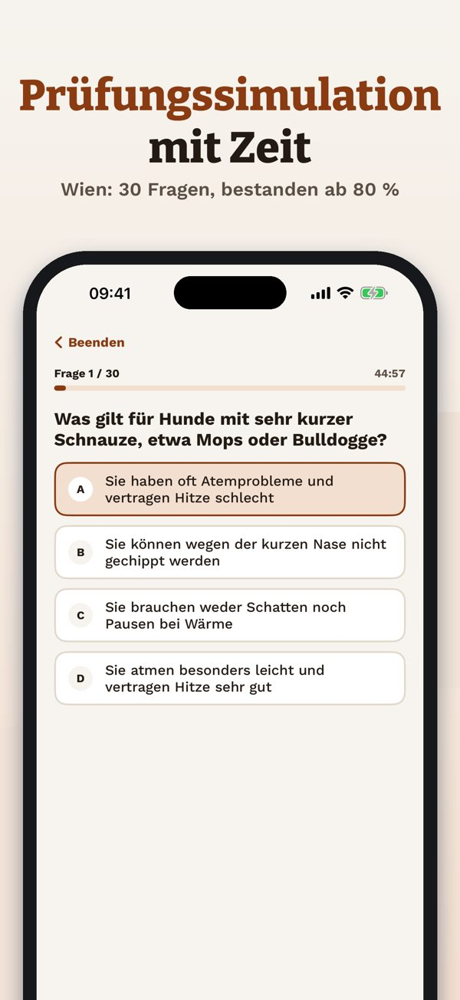

Sachkundenachweis Hund üben



Hundeklar hilft dir, die Theorie für Hundeführschein und Sachkundenachweis in Österreich und der Schweiz zu üben – mit Regeln nach Bundesland.
20 Fragen, die Begriffe und die Checkliste kannst du ohne Kauf nutzen. Die Vollversion ist ein Einmalkauf und schaltet alle Fragen, Simulationen und die Statistik frei. Kein Abo.
Hundeklar ist unabhängig und nicht mit Behörden, Ländern oder Hundeschulen verbunden. Die Prüfung legst du bei einer zugelassenen Stelle ab.
Terms of Use (EULA): https://www.apple.com/legal/internet-services/itunes/dev/stdeula/
Privacy: https://baytechbv.github.io/privacy/hundefuehrschein-at/